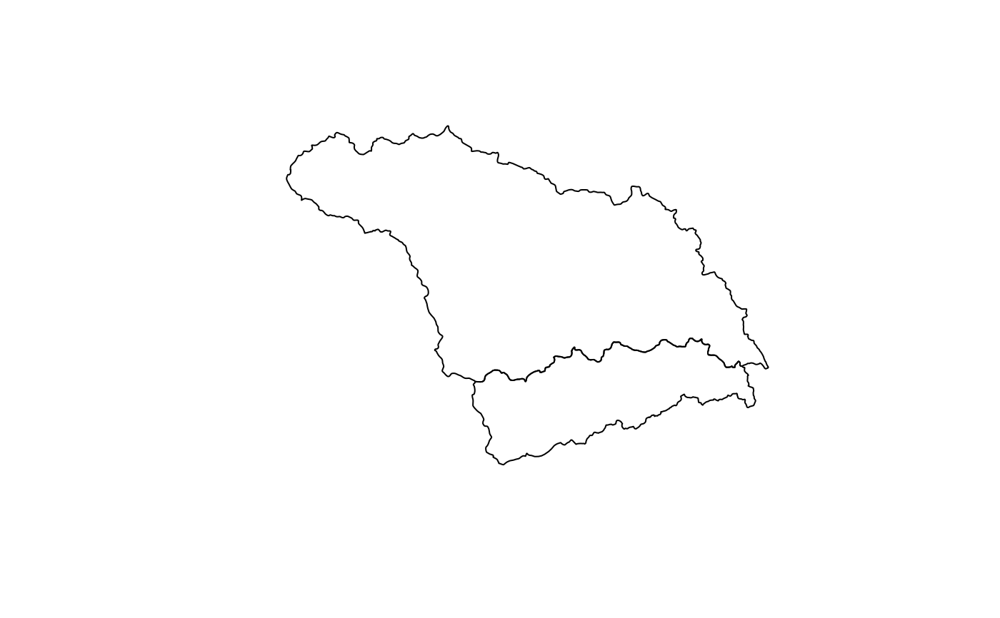

Attempts to convert a NetCDF-CF DSG Simple Geometry file into a sf data.frame.
read_geometry(nc_file)character file path to the nc file to be read.
sf data.frame containing spatial geometry of type found in the NetCDF-CF DSG file.
http://cfconventions.org/index.html
huc_eta_nc <- tempfile()
file.copy(system.file('extdata','example_huc_eta.nc', package = 'ncdfgeom'),
huc_eta_nc, overwrite = TRUE)
#> [1] TRUE
vars <- ncmeta::nc_vars(huc_eta_nc)
hucPolygons <- sf::read_sf(system.file('extdata','example_huc_eta.json', package = 'ncdfgeom'))
plot(sf::st_geometry(hucPolygons))

names(hucPolygons)
#> [1] "TNMID" "METASOURCE" "SOURCEDATA" "SOURCEORIG" "SOURCEFEAT"
#> [6] "LOADDATE" "GNIS_ID" "AREAACRES" "AREASQKM" "STATES"
#> [11] "HUC12" "NAME" "HUTYPE" "HUMOD" "TOHUC"
#> [16] "NONCONTRIB" "NONCONTR_1" "SHAPE_Leng" "SHAPE_Area" "geometry"
hucPolygons_nc <- ncdfgeom::write_geometry(nc_file=huc_eta_nc,
geom_data = hucPolygons,
instance_dim_name = "station",
variables = vars$name)
huc_poly <- read_geometry(huc_eta_nc)
plot(sf::st_geometry(huc_poly))
names(huc_poly)
#> [1] "lat" "lon" "station_name" "TNMID" "METASOURCE"
#> [6] "SOURCEDATA" "SOURCEORIG" "SOURCEFEAT" "LOADDATE" "GNIS_ID"
#> [11] "AREAACRES" "AREASQKM" "STATES" "HUC12" "NAME"
#> [16] "HUTYPE" "HUMOD" "TOHUC" "NONCONTRIB" "NONCONTR_1"
#> [21] "SHAPE_Leng" "SHAPE_Area" "geom"